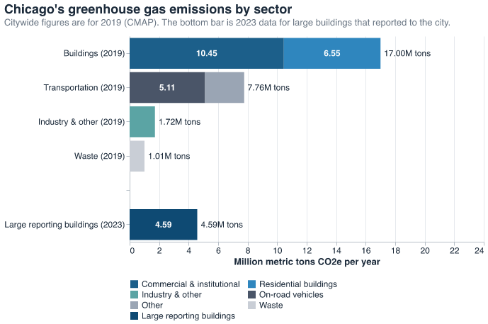
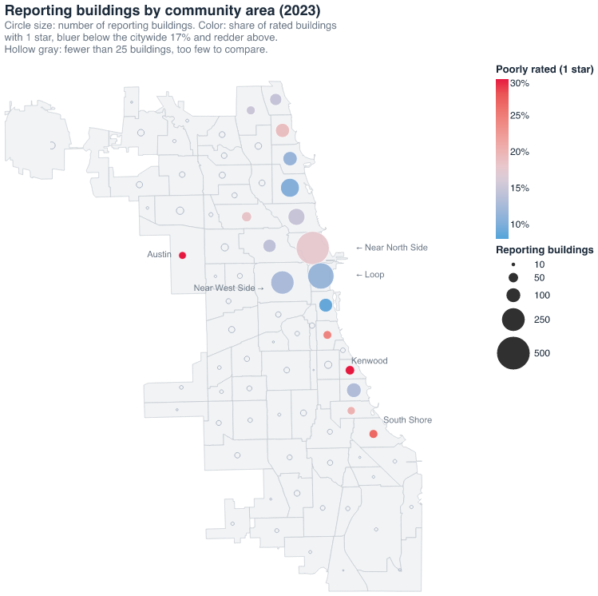
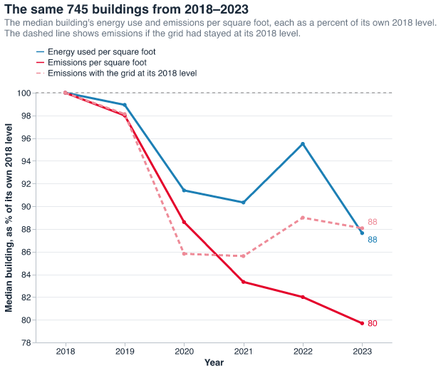
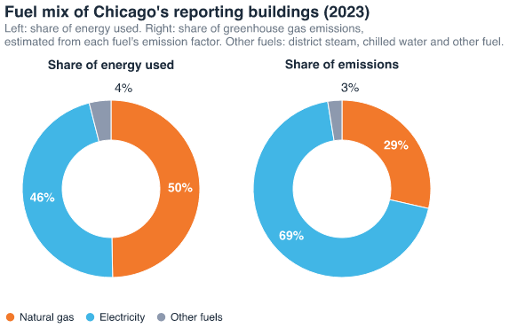
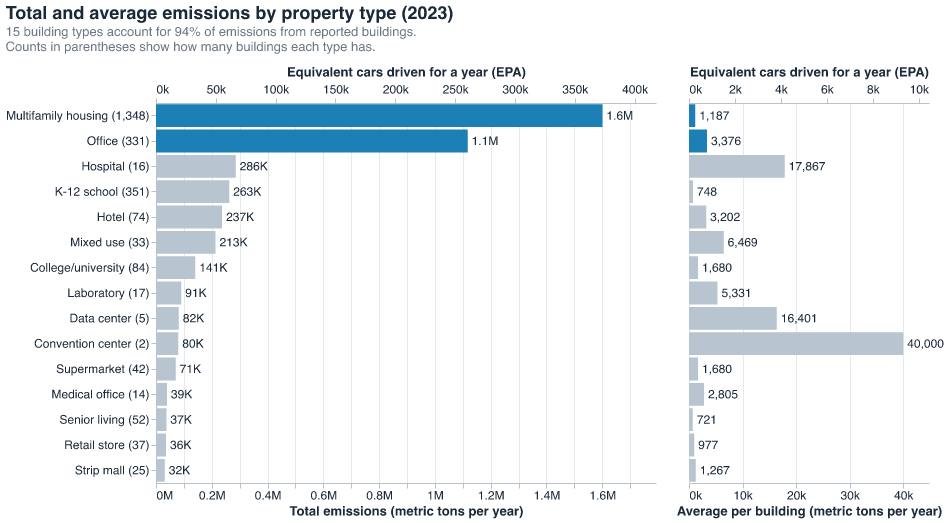
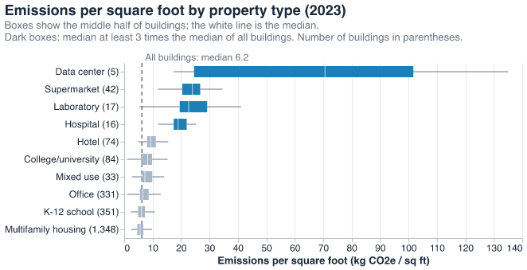
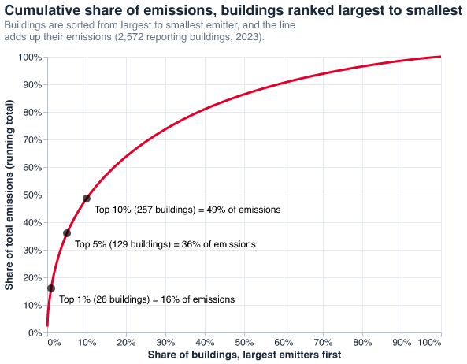
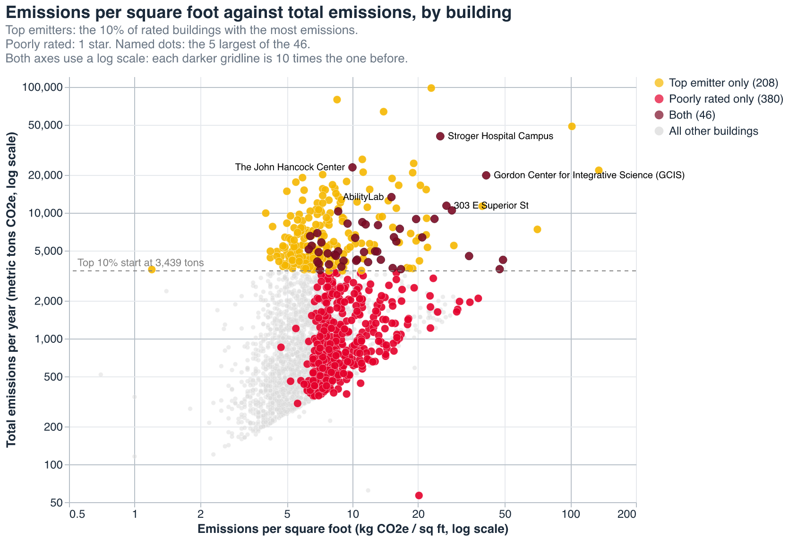
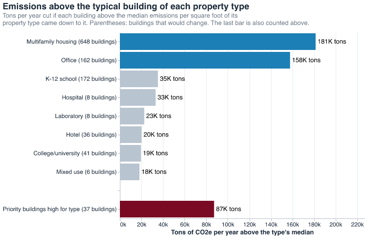

Where to Start Cutting Chicago's Building Emissions
Chicago aims to cut its emissions 62% by 2040 from 2017 levels (City of Chicago, 2022). Buildings make up a majority of emissions in Chicago (Chicago Metropolitan Agency for Planning [CMAP], 2022; City of Chicago, Office of the Mayor, 2025). In 2013, the City released the Chicago Energy Benchmarking Ordinance which requires large buildings greater than 50,000 square feet to report yearly data on their emissions. This analysis uses Chicago Energy Benchmarking data from 2014–2023 to examine trends in building emissions and to identify targets for impactful emissions reduction.
Important terms
- CO2e
- Carbon dioxide equivalent. It converts every greenhouse gas to the amount of carbon dioxide that would trap the same heat, so emissions can be added up in one unit.
- Ton
- A metric ton or 1,000 kilograms. One ton of CO2e is equivalent to what a gasoline car emits in under three months or driving about 2,500 miles (U.S. Environmental Protection Agency [EPA], 2026).
- Emissions vs. energy use
- Emissions come from how much energy a building uses and how clean that energy is. Both using less energy and switching to cleaner energy lowers emissions.
- Emissions intensity or emissions per square foot
- A building's yearly emissions divided by its floor area, in kilograms of CO2e. This allows for comparing large and small buildings.
- Reporting buildings
- Buildings that submitted benchmarking data. Up to 2,584 reported for 2023, and each chart uses a subset of these buildings.
- Chicago Energy Rating
- A rating of 0 to 4 stars. 4 is the best, 1 is the worst. Buildings that did not submit a complete report are given zero stars and are excluded for any rating-related analysis.
- ENERGY STAR score
- A score from 1 to 100 that compares a building's energy use with similar buildings nationwide. The Chicago Energy Rating is based on it.
- Percentile (within a property type)
- The share of buildings of the same type that a building emits more per square foot than. A building at the 77th percentile emits more than 77% of its peers. Top quarter means the 75th percentile or higher.
- Emission factor
- How much CO2e a fuel produces for each unit of energy, in kilograms of CO2e per kBtu (1 kWh is about 3.4 kBtu). Emissions = energy used x emission factor. The benchmarking data provides each building's energy use by fuel type and its total emissions but doesn't breakdown the emissions by fuel type. The emissions factors for electricity and natural gas were derivable from the dataset and used to estimate emissions by fuel type. Figure 3 uses 2018 factors from its 745 buildings (electricity 0.167, natural gas 0.052). Figure 4 uses 2023 factors from all reporting buildings (electricity 0.139, natural gas 0.054).
- Acronyms
- CMAP: Chicago Metropolitan Agency for Planning. EPA: U.S. Environmental Protection Agency.
Background
Buildings consistently produce about two-thirds of the city's emissions: 62% in CMAP's 2019 inventory (17 of 27.5 million tons) and 70% in the City's 2025 benchmarking release (CMAP, 2022; City of Chicago, Office of the Mayor, 2025).

The 2,584 buildings that reported in 2023 emitted 4.6 million tons, about a quarter of the 17 million tons from buildings in CMAP's 2019 inventory (a different year and method). A large portion of the missing tons likely comes from all buildings under 50,000 square feet that aren't included in this analysis. Another 542 required buildings did not report, so about 83% of the 3,126 required reporters submitted emissions data. Another 312 buildings had an undefined status and are not included in this analysis.
Current state of reporting buildings

A high-level overview of Chicago's buildings shows the share of buildings is concentrated Downtown, in the Loop and the Near North, Near West and Near South Sides. Though Downtown has 42% of reporting buildings, only 14% of its rated buildings are poorly rated. The highest shares of poorly rated buildings are in Kenwood (34%), Austin (31%) and South Shore (26%), though each has only 26 to 38 buildings. Stars come from the Chicago Energy Rating (4 is best, 1 is worst) and are based on a building's ENERGY STAR score (City of Chicago, n.d.). Ratings alone don't show how much a building emits. Next we'll look at emissions and emissions intensity.

For the 745 buildings that reported every year, energy use fell 12% since 2018 but emissions fell 20%. The dashed line converts each year's fuel use to emissions with the 2018 emission factors (kilograms of CO2e per unit of electricity, gas and other fuels), which we estimated from these buildings' own 2018 fuel use and reported emissions. With the factors held fixed, emissions follow energy use and end at 88, the same as energy use. The 8-point gap shows the effect of Chicago's grid becoming cleaner: the same energy produces less pollution.

Gas (50%) and electricity (46%) supply nearly all of the energy these buildings use. However, they are not equally polluting: a unit of electricity produces more emissions than a unit of gas, so electricity accounts for about 69% of the emissions and gas for 29%. That share depends on the grid, so as electricity gets cleaner its share of emissions falls, and replacing gas heating with electric heat can become more worthwhile.
Emissions and emissions intensity by building type


Multifamily housing and offices were the property types with the most emissions. However, they also have the top and third top building counts, 1,348 for multifamily housing and 331 for offices. When you look at the average emissions, convention centers, hospitals and data centers emit the most per building. The average hospital emits about 15 times as much as the average multifamily building. Together, multifamily housing and offices produce 59% of reported emissions from many modest buildings, so reaching many ordinary buildings matters. Hospitals, laboratories, data centers and supermarkets, which are 3 to 11 times as intense as the typical building, produce about 12% from far fewer buildings, so they call for targeted, site-specific upgrades.
Buildings to target for emissions reductions


Both poor ratings and large emissions are indicators of potential emissions reduction. Only 46 buildings are both top emitters and poorly rated, and together they produce 338,000 tons, 7% of reported emissions. Stroger Hospital Campus (about 40,000 tons), the John Hancock Center (22,800) and the Gordon Center for Integrative Science (19,700) are at the top of the list. 37 of the 46 are in the top quarter of their type for emissions per square foot, and if they matched the typical building of their type, emissions would fall about 87,000 tons a year, roughly 2% of reported emissions (City of Chicago, 2025).

If every building above the median emissions per square foot of its property type came down to that median, emissions would fall about 532,000 tons a year, 12% of reported emissions. Multifamily housing and offices hold 64% of that, but it is spread across hundreds of buildings. The 37 priority buildings that are high for their type could cut about 87,000 tons with a far shorter list. This is an upper bound and not a forecast, since not every building can match its type's median.
Key findings
- Both using less energy and a cleaner grid cut emissions. For the 745 buildings that reported every year, emissions per square foot fell 20% since 2018. Using less energy accounts for 12 points of that and a cleaner grid accounts for the other 8, about 40% of the drop.
- Two kinds of buildings call for two different policies. Multifamily housing and offices produce 59% of reported emissions across about 1,700 buildings that each emit little on average, so they need programs that reach many buildings at once. Hospitals, laboratories, data centers and supermarkets produce about 12% from far fewer buildings that each emit far more, so they call for targeted, site-specific upgrades.
- A short list can deliver quick results. Only 46 buildings are both among the largest emitters and poorly rated. Together they produce 338,000 tons, 7% of reported emissions. Bringing the 37 that are high for their type down to the typical building of their type would cut about 87,000 tons a year, roughly 2% of reported emissions.
Data Sources
- Chicago Energy Benchmarking (City of Chicago Data Portal): annual energy use, greenhouse gas emissions and Chicago Energy Rating for buildings over 50,000 square feet. This analysis uses 2023 for most charts and 2018 to 2023 for the trend. Data last updated by the city February 5, 2025; downloaded October 1, 2026. https://data.cityofchicago.org/Environment-Sustainable-Development/Chicago-Energy-Benchmarking/xq83-jr8c
- CMAP Regional Greenhouse Gas Emissions Inventory (2022 report, 2019 data): citywide emissions by sector. It is the most recent citywide inventory available, and it comes from a different year and method than the benchmarking data.
- Boundaries - Community Areas (City of Chicago Data Portal): the community area shapes for the map (City of Chicago, 2026). Last updated by the city March 25, 2026. https://data.cityofchicago.org/resource/igwz-8jzy
Sources
- Chicago Metropolitan Agency for Planning. (2022). Regional greenhouse gas emissions inventory: Updated with 2019 data. https://cmap.illinois.gov/wp-content/uploads/Greenhouse_Gas_Emission_Inventory_2022.pdf
- City of Chicago. (n.d.). Chicago Energy Rating. https://www.chicago.gov/city/en/progs/env/ChicagoEnergyRating.html
- City of Chicago. (2022). Climate Action Plan. https://www.chicago.gov/city/en/sites/climate-action-plan/home.html
- City of Chicago. (2025). Chicago Energy Benchmarking [Data set]. Chicago Data Portal. Last updated February 5, 2025; downloaded October 1, 2026. https://data.cityofchicago.org/Environment-Sustainable-Development/Chicago-Energy-Benchmarking/xq83-jr8c
- City of Chicago. (2026). Boundaries - Community Areas [Data set]. Chicago Data Portal. https://data.cityofchicago.org/resource/igwz-8jzy
- City of Chicago, Office of the Mayor. (2025, July). Mayor Brandon Johnson announces release of 2022-2023 Chicago Energy Benchmarking Report. https://www.chicago.gov/city/en/depts/mayor/press_room/press_releases/2025/july/2022-2023-Energy-benchmark-report.html
- U.S. Environmental Protection Agency. (2026). Greenhouse Gas Equivalencies Calculator: Calculations and References. https://www.epa.gov/energy/greenhouse-gases-equivalencies-calculator-calculations-and-references